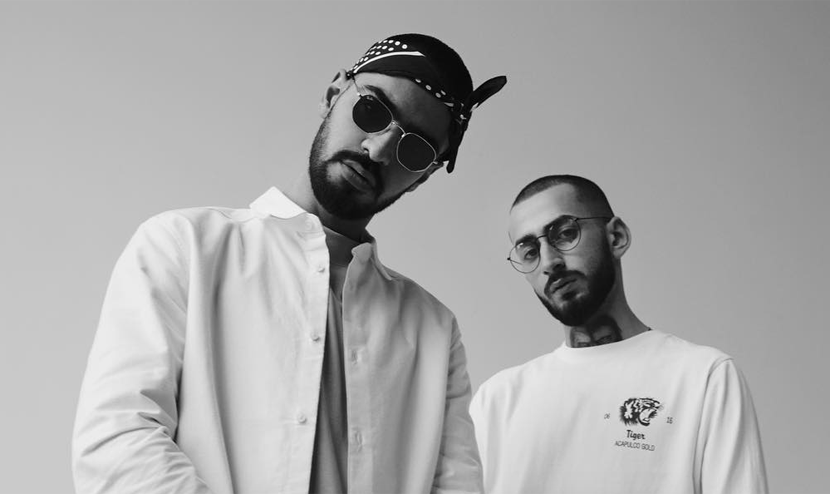
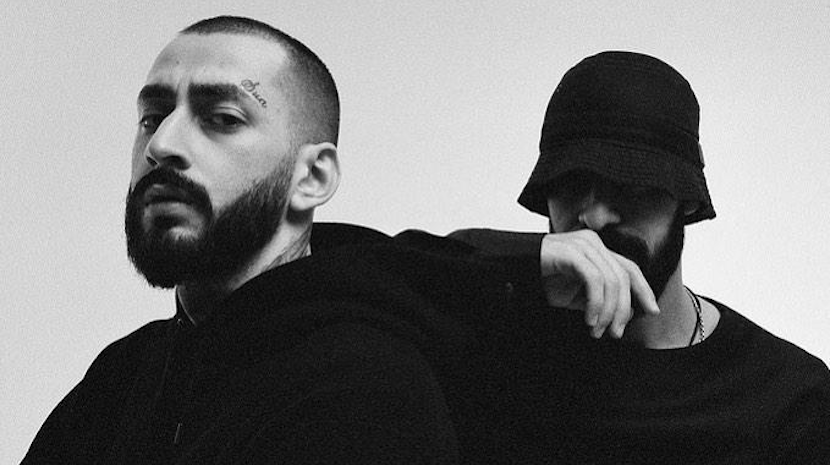
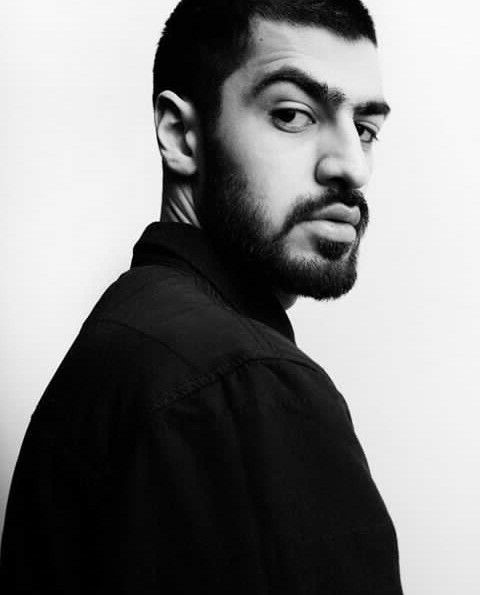
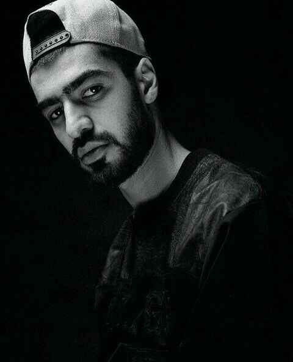
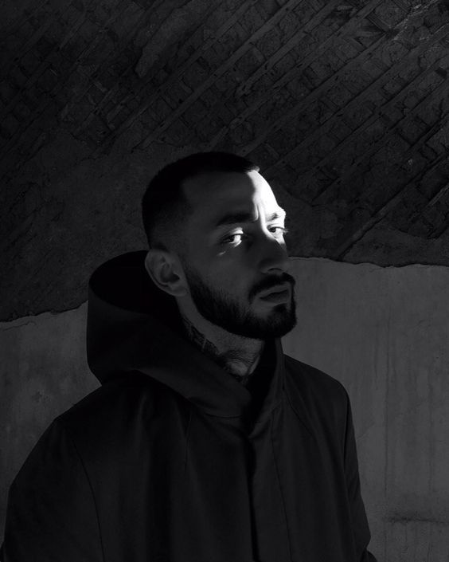
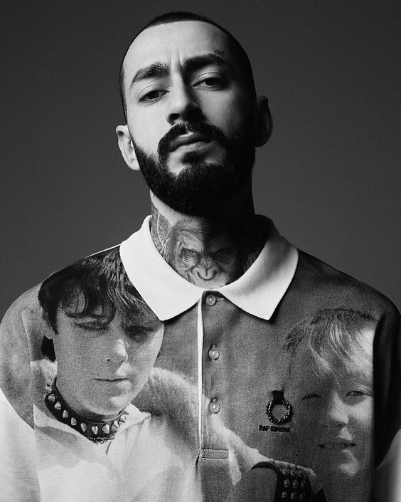

| Miyagi & Andy Panda — российский хип-хоп-дуэт из города Владикавказ, Северная Осетия, образованный в 2015 году.
Коллектив состоит из двух человек, известных под сценическими псевдонимами «Miyagi» — Азамат Кудзаев и «Andy Panda» — Сослан Бурнацев. |
|---|
|  |
 
Miyagi
| Кудзаев Азамат Казбекович родился 13 декабря 1990 года во Владикавказе.
Отец — хирург и руководитель «Центра ортопедии и эстетической хирургии» в Северной Осетии.
Азамат окончил медицинскую академию. Работал хирургом, но в скором времени бросил и стал заниматься музыкой.
Занимается рэпом с 2007 года. В 2007—2013 гг. выступал под псевдонимом Shau, затем сменил его на MiyaGi.
Свой псевдоним взял в честь мистера Мияги из фильма «Парень-каратист». |
|---|


Andy Panda
| Сослан Бурнацев родился 2 октября 1995 года во Владикавказе.
В юности играл в футбол за юношескую команду «Спартак» (Владикавказ).
Получил образование пищевого технолога. Начал заниматься рэпом с 16 лет.
Свой псевдоним взял под впечатлением от фильма «Адский эндшпиль». |
|---|